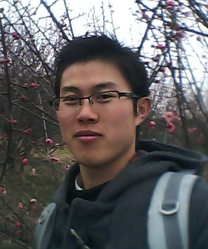
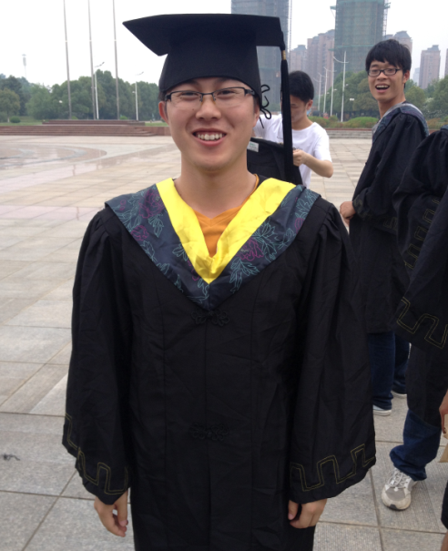
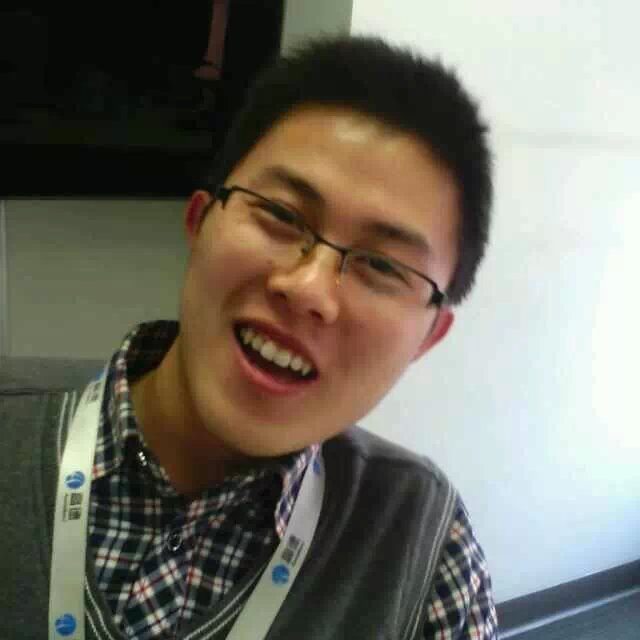

关于我
也给自己起了个阿里的花名，叫“鬼谣”，取之于《山鬼谣.问何年》这个词牌名，当然你要说是取之于动画片《侠岚》，我也无所谓。
小学时代的梦想是成为一名作家，当了很多年的语文课代表，做过校报编辑，拿过作文比赛名次等等。同学和老师们也这么认为。
到了高中，去了省里最好的中学，本应该在那里把文学素养提高一些...但是，不仅没能提高，反而没把语文学好。现在突然想明白一件事：老师同学们，你们确定那时候没骗我，我读书少。
上了大学，选择了一个理科专业(GIS),以为是研究地理的。没想到，王大锤万万没想到，GIS是建立在计算机基础上的一门学科。GIS(Geographic Information System)成了没有Geographic只有Information System的学科。我想把GIS放在软件工程底下的一个细类更好吧。索性的是，当自学了C语言后，发现自己对编程感兴趣了，后来课程教授的是C++。大二， 拿了一等奖学金买了电脑，开发学习一些web开发，做一些静态网页等等，也就是那时锻炼了手写HMTL+CSS+DIV的能力，幸好当时没用Dreamweaver,要不然现在估计只能使用Dreamweaver做站长了，哈哈...新生来了，被推荐为助理班主任，带大一新生。后来有几个同学跟我学编程，于是周末再实验室给他们上web编程，第一次为兄长，这也加强了我的基础。现在师弟他们，有的技术水平已经很好了，有的在中兴，有的在考研。大二下学期，开始应聘到一家做GIS基础平台的公司。虽然当时是C++工程师，但是心里还是装着web，有时候把，感兴趣了就不可收拾。一晃，大三，开始各种忙碌起来，有老师的项目，有自己的项目，同时还有比赛的项目。记得在比赛的最后几天，为了赶工期，我和团队的另一位同学@昶一起熬了好多个夜晚，一般都是晚上在会议室睡觉。幸好，那年我成为第一届GIS会长(当时招了500人)，给我们安排了一个比较大的会议室，可以容纳10来人。想起那段比赛的日子，虽然很苦，但是特别怀念，还记得当时去现场答辩的情形。当然结果也还不错，安徽省省赛第一名...后来准备将会议室留给咱班考研的同学看书用，没想到会长卸任后，被调整回收啦。这是传说中的人走茶凉么？...

大三
大三下学期，老院长找到我，希望我可以带领一个团队去创业，开一家软件开发的公司，他给我们拉项目。很长一段时间都在劝我...但是，我心底明白，我需要的技术的提升，心底一直都没有过创业的念头，也觉得条件太不成熟。社交媒体是个神奇的东西！经过技术沟通等我认识高德一位研发经理，他就是我后来的leader，这也促进我学习的劲头(大二开始写博客，觉得是个好习惯，不过今年把之前在JavaEye上写的博客都删了，感觉写的太基础)。因为之前比赛拿了第一名，开始有些GIS业界企业联系我。大三的暑假没有想过出去的念头，于是在师兄的公司实习，做的是.NET WCF服务那一套。整个暑假也想清楚了一件事，就是不考研，虽然专业成绩一直都是第一名，当然其中的原因有很多...谢谢那时自己做了一个合理的选择。
大四了，准备去找工作的，但是因为正好赶上教育部对学校进行评估，没有下一届那么幸运，一直不能离校，小城市学校的弊端啊(大公司校招太少)。直到10月份，才开始投递简历，拿了5个offer，权衡利弊加上想见见认识的大牛，于是选择了去高德面试。经过笔试、技术一面、技术Boss面、HR面，当天下午就拿到了offer。当时太善良，直接说少了工资，不过HR后来发offer给增加了。现在，才知道，拿的是本科的special offer。谢谢那个HR,不是传说中死抠......

现在是小胖子,我开心...
13年10月20日入职高德，开始做Node.js服务研发。后来开始做高德地图M站的服务，这时候Node开始越来越熟练，当然得感谢@ivan和@pana。还没等到我转正，leader选择了离开高德...后来有同事有同学离开了高德。高德在阿里收购后，变化很大...友秘上也有很多爆料的。但是，我一直都是带有正能量去看待这些，拥抱变化，快速成长。感谢后来的leader@curtis给我单独历练的机会，这段时间不仅好好的把Node过了一遍，还加入了API团队，专职写原生JavaScript。同时，配合运营开讲了7讲高德JS-API公开课，体验了一次布道师的感觉。身处一个技术导向的团队是我的幸运。谢谢身边每一位可亲的同事们。
一年有一年，回顾过去觉得做的最为正确的事是(1)选择了web (2)选择了工作。一年又一年，期待未来，期待明天，趁着还年轻，多做做有意义的事情......
大学获得奖励
1. 2013年6月:ESRI杯安徽省第四届GIS开发大赛web创新设计组第一名；
2. 2010年9月~2013年9月：连续获得校级一等奖学金（3次，3%）；
3. 2010年9月~2013年9月：国家励志奖学金（3次，3%~5%）；
4. 2010年9月~2013年9月：连续获得校级“三好学生”（3次，4%）；
5. 2010年9月~2013年9月：苍穹企业奖学金（1次）；
6. 2013年5月~2014年5月：主持国家级大学生创新训练项目一项，主持人；
7. 2010年9月~2013年9月：主持校级大学生科研项目2项，主持人；
8. 2010年9月~2014年6月：担任学习委员、11级地信2班助理班主任；
9. 2012年6月~2013年6月：GIS首届会长、校技术创新团队MySpace组长；
10. 2013-2014年：荣获2014年安徽省品学兼优毕业生、荣获校十佳大学生（科技创新，约1/1500-2000）。

昵称：
vczero
从业：
web前端研发工程师(JS + Node)
公司：
高德地图研发中心
职责：
JavaScript API & API服务
高中没有学好VB，那时觉得高考才是重点。大学选择
了理科(GIS)，于是开始了自学C语言，大一
下学期课程安排是C++，放弃了C，于是开始捣鼓C++，
开始捣鼓MFC。大二开始看点web编程，大二实习的时
候，做的是公司的C++平台研发。但是心里一直装着一
个web的梦想，于是回学校继续做一些web项目。大三的
时候，专心web编程，既写前端，也写后端，参加过比赛，
给老师做过项目，也自己捣鼓一些自己的项目，渐渐没
有了周末...大四，专心写Node.js和JS。活该现在是小胖子!!!
大学到参加工作以来，要感谢的人很多，感谢如兄如父的@涛哥，C++大牛@dll，web创新@蒋博士，带我的@yhostc & @ivan706...
特别感谢我60岁老父亲把我抚养长大...从农村一路走来，我很幸运，谢谢你们!